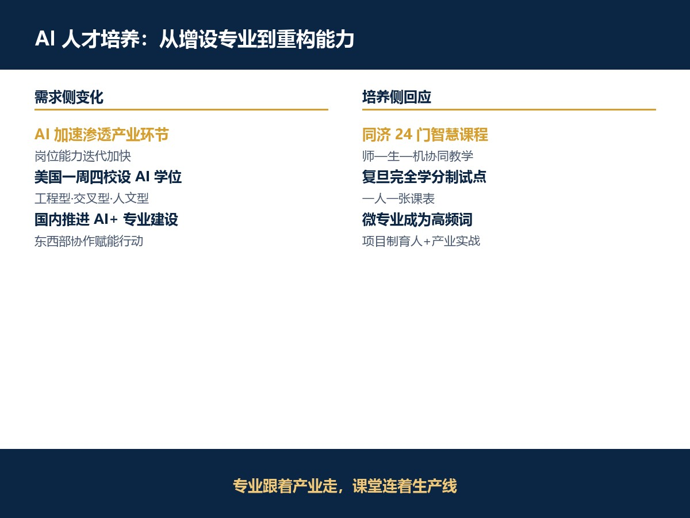

人工智能人才培养正在发生一次转身。过去几年，高校最直观的动作是增设人工智能专业；现在，更深的变化出现在课程、课堂和评价方式里。同济大学已建设 24 门智慧课程，探索“师—生—机”协同教学；复旦大学推进完全学分制试点，让学生形成“一人一张课表”；微专业、项目制育人和产业实战项目持续升温。AI 人才培养的核心，已经不是多开一个专业，而是重构从知识传递到能力生成的一条完整链条。

一、事实层面：需求侧和培养侧都在加速
需求侧的变化首先来自产业渗透。人工智能不再只存在于算法研发岗位，而是进入制造、金融、跨境电商、教育、医疗、政务等具体场景。岗位能力随之迭代：会调用模型不够，还要懂业务流程、数据质量、工具边界、合规要求与结果评估。
海外高校也在快速回应。公开信息显示，曾有海外高校在一周内新增四个 AI 学位项目，反映需求端对工程型、交叉型、人文型人才的共同渴求。工程型人才解决技术实现，交叉型人才连接行业场景，人文型人才处理伦理、治理与社会影响，三类能力缺一不可。
国内高校的回应更强调教学组织改造。同济大学 24 门智慧课程把人工智能工具嵌入教学环节，推动教师从单纯讲授转向引导、答疑与过程评价；复旦大学完全学分制试点把选择权更多交给学生，要求课程体系和学业指导同步升级。微专业则成为高频词，以更短周期、更聚焦的课程包回应产业变化。
二、深水区问题：增设专业不等于培养能力
第一个问题是课程更新慢于技术迭代。人工智能工具半年就可能完成一轮能力升级，而培养方案修订通常以学年为单位。如果课程内容主要依赖教材和教师个人经验，学生学到的很可能落后于真实岗位。
第二个问题是“会用工具”被误认为“具备能力”。学生能够生成文本、图片或代码，并不等于能定义问题、校验结果、组织流程和承担责任。企业真正需要的是能把 AI 放进业务闭环的人，而不是只会操作界面的人。
第三个问题是师资结构跟不上。人工智能人才培养要求教师既懂专业，又懂数据、模型与场景。单靠新增几门技术课，难以改变原有教学范式。教师如果没有真实项目训练，学生也很难获得可迁移的实战能力。
三、培养侧回应：从课程包到能力链
其一，“师—生—机”协同重塑课堂。教师负责提出真实问题、设计任务和评价结果，学生负责分析、尝试与表达，智能工具承担资料检索、代码辅助、方案模拟和反馈生成。三者协同的关键，不是让机器替代教师，而是把课堂时间更多留给问题判断和创造性工作。
其二，完全学分制推动个性化学习。“一人一张课表”意味着学生可以根据方向选择课程组合，也意味着高校必须提供更清晰的课程地图、导师指导和先修关系。否则，自由选课容易变成碎片化堆砌。
其三，微专业成为快速响应窗口。微专业可以围绕智能客服、数据分析、AI 产品设计、跨境电商业绩优化等具体场景设置，周期短、目标明确，适合高校快速验证产业需求，也适合在职人员补充新技能。
其四，项目制育人和产业实战成为关键环节。学生需要在真实或仿真项目中完成需求分析、数据处理、方案设计、成果展示与复盘。研究院在服务高校人工智能专业建设时，也更应把真实项目导入、课程改造和能力评价串在一起。
四、客户场景：高校与企业如何各司其职
对高校而言，重点不是简单宣布“所有专业都加 AI”，而是建立分层能力框架：低年级培养数字素养和工具使用，中年级训练专业场景中的 AI 应用，高年级通过项目和实习完成综合验证。同时，要允许不同专业按自身逻辑吸收 AI，避免同质化。
对企业而言，重点是开放场景和标准。哪些任务适合交给 AI，哪些结果必须由人复核，什么样的人才能够进入岗位，企业需要给出更具体的说明。高校只有拿到真实任务，才能把课堂从概念讲解推进到问题解决。
对区域合作而言，东西部协作赋能行动提供了另一种思路。通过课程共享、师资培训、项目共建，将人工智能教育资源向更广范围延伸，既能缓解区域师资差异，也能为地方产业培养留得住、用得上的应用型人才。
五、趋势判断：能力评价将取代课程数量
其一，人工智能素养会成为基础能力。未来无论学习哪个专业，都需要理解数据、模型、提示、工具边界和风险意识。AI 通识教育会像计算机基础一样，成为人才培养底座。
其二，专业建设会从“有没有”转向“强不强”。新增专业数量不再是核心指标，学生作品、项目成果、就业质量、企业参与度和课程更新速度，会成为更重要的评价依据。
其三，能力图谱会替代零散课程清单。高校需要把岗位能力拆解为可培养、可评价的模块，再映射到课程、项目和实践环节。学生看到的不再是一堆课程名，而是一条清晰的能力成长路径。
其四，产教融合会前移到培养设计阶段。企业不再只在毕业季出现，而会参与课程共建、项目命题、师资培训和成果评价。谁能把生产线问题变成教学项目，谁就能培养真正适应产业变化的人才。
结语
AI 人才培养的转身，是从“增加一个专业”走向“重构一条能力链”。课程要跟着产业走，课堂要连着真实场景，评价要指向解决问题。对高校而言，这是教学组织的重塑；对企业而言，这是人才标准的开放；对研究院而言，这是连接教育链与产业链的机会。只有把教师、学生、智能工具和真实项目放到同一个培养系统里，人工智能教育才能从热闹走向扎实。
本文所引案例来自公开报道与高校公开信息，具体分析为行业趋势研判，不构成报考、经营或投资建议。